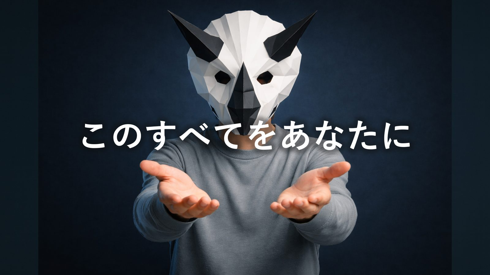

はじめに
この動画では、下の記事の内容をスライドで解説しています。まず動画を見て、そのあと記事で復習してください。
DTMで挫折する人に、共通点がある
「DAWを買ったけど、何をすればいいか分からなかった」
「プラグインを揃えたのに、音楽らしい音楽が作れなかった」
「YouTubeで勉強しようとしたら、情報が多すぎて混乱した」
共通点が一つあります。地図を持たずに歩き始めたこと。
DTMは、最初に全体像を渡してもらえる機会が少ない。スタジオの使い方も、道具の種類も、曲ができるまでの順番も、断片的な情報としてしか届かない。だから「何をしているのか分からないまま」進んで、止まる。
この本は、その地図を渡すために作りました。
この本で得られること

- DTMの全工程が「作る→整える→届ける」の3段階で整理される
- Ableton Liveという作業場の全体像が分かる
- 最低限の用語と、音が鳴る仕組みが分かる
- 道具（プラグイン）が何のための道具か分かる
- 自分が作りたいジャンルの位置が分かる
- Ableton Liveで実際に音を出す体験ができる
逆に、この本では扱わないことも明確にしておきます。ミキシングの実技、シンセサイザーの詳しい使い方、曲を仕上げる具体的な順番——それらはこの本の後に続くコンテンツで扱います。この本はあくまで「地図」です。
FL StudioやLogic Proをお使いの方には向きません。理由は一つ——私がロードマップ講座でも、チュートリアル動画でも、一貫してAbleton Liveを使っているからです。この本で覚えた画面の見方・操作感が、そのまま次の学習につながります。
Ableton Liveはまだ持っていなくても大丈夫です。90日間の無料トライアルがあります。第2章で案内します。
私について
トリケラテクノといいます。テクノを作る恐竜です。
DTMを始めたのは数年前。音楽経験はゼロでした。楽器も弾けない、音符も読めない、コードも分からない。スタートラインは、今これを読んでいるあなたと同じか、それ以下だったと思っています。
最初の1年は、ほとんど何も作れませんでした。プラグインを買い集めて、YouTubeを見て、試して、意味が分からなくなって、また最初からやり直す。その繰り返しでした。
転機は「全体像を理解した」ときです。何のための道具か、今自分はどのフェーズにいるか、次に何をすればいいか。それが分かった瞬間から、急速に前に進めるようになりました。
この本はその経験から作っています。最初に地図があれば、あの1年はもっと短くなっていた。そう思っているからです。
この本の使い方
第1章から順番に読んでください。各章は独立していますが、第7章（実践）は前の章を読んでいることを前提に書いています。
第7章だけは、Ableton Liveを開いた状態で読み進めてください。画面を見ながら手を動かします。
読み終わった後、何をすればいいかは最終章（第8章）で示します。
では、始めます。